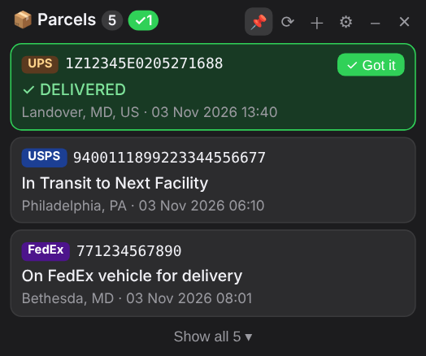

Parcel Widget 快递小组件
住在桌面上的一个动画小角色。她替你做一些小事，做完后在漫画气泡里告诉你结果： 查快递、看邮件、盯着 AI 助手干活、看系统状态、检查 USB 驱动和打印机。

她怎么工作
- 启动时，每项任务各跑一次，并在气泡里一步步汇报。每条汇报点按钮确认。 每次检查都会记下时间和结果；如果下次计划检查还没到就重启了，她直接显示上次的结果，不重复检查。
- 之后她进入空闲，任务按各自的时间表在后台运行。快递默认 09:00 到 19:00 每 90 分钟查一次（可改）； 只有情况变化时气泡才会再弹出来。电脑睡眠时什么都不运行，唤醒后安静地补查一次；网络没恢复就隔 3 分钟重试，最多 3 次。
- 空闲时，把鼠标移到她身上会出现一圈按钮，每项功能一个。点她一下是"戳她"，按住可以拖动。
- 右键点她（或点托盘 / 菜单栏图标）打开菜单：每项功能一个子菜单，以及显示小组件、设置、退出。 细节都在设置窗口里。
功能一览
📦 快递
只读扫描 Gmail（IMAP + 应用专用密码），找出 UPS、FedEx、USPS、Amazon 的单号，再用真实浏览器到 parcelsapp.com 读最新进展。 已送达的有"✓ 收到了"按钮；也可以在气泡里手动加单号。
✉️ 邮件
把收件箱分成重要、其他、可以跳过三类，可加自己的规则。只读：不移动、不删除、不标已读。 打开过一次邮件功能后，每 30 分钟看一次，只在有新的重要未读邮件时提醒。
🤖 关注 Claude Code
Claude 做完时告诉你结果；它请求权限或提问时，直接在气泡里点"允许 / 总是允许 / 拒绝"或选答案。 不答或点"去 Claude 里答"，就交回 Claude 自己的窗口。
✨ Claude小姐
在气泡里输入任务，由 claude 命令行在你选的文件夹里运行。能看到它正在做什么和最后的回答，
可以追问、停止、开新对话，还能选模型和思考深度。
🌀 Codex
同样的气泡对话，由 OpenAI 的 codex exec 运行。Codex 在沙箱里工作：只能改你选的文件夹，不能联网；
也可以设成只读。
🧑💼 关注 WorkBuddy
腾讯 WorkBuddy 应用里的任务做完、出错、请求权限或提问时，在气泡里提示并可代答。
没有气泡对话：WorkBuddy 没有独立命令行，登录也只在应用内。
🐙 GitHub
你的仓库（最近推送在前）、未读通知，以及本机副本里未提交、未推送的内容。通过 gh 命令行查询，
小组件看不到你的令牌。
📊 系统状态
CPU、内存、下载和上传，画成 K 线图。每根 K 线 5 秒到 1 分钟，红涨或绿涨可选。
🔌 USB 设备
列出插着的 USB 设备和各自的驱动，再上网查驱动是否有新版并给出链接。不会替你更新任何东西。 新插入的设备 30 秒内发现。
🖨 打印机
按实体打印机分组显示。一键免驱动添加网络打印机，清理重复条目，设默认，打测试页。
👉 戳一戳
随机一个动作加一句话。
其他
动画皮肤和 AI 生成的自定义皮肤；屏幕尺寸预设；置顶；可以同时开多个互相独立的副本（像多个账号）。
安装
Windows：从源码安装
需要 Python 3.10 到 3.13（安装时勾选 "Add python.exe to PATH"）， 以及 WebView2 运行时（Windows 11 和较新的 Windows 10 自带）。
git clone https://github.com/cxlgo64/ParcelWidget.git
cd ParcelWidget
git checkout windows
install.batinstall.bat 会创建 .venv、安装依赖、设置登录时自动启动，然后启动她。
之后手动启动用 start.bat；取消自动启动用 uninstall_autostart.bat。
D:\ParcelWidget。
路径太长（大约超过 190 个字符）时，Windows 会拒绝加载虚拟环境里的 DLL，启动时报"文件名或扩展名太长"。^ 箭头里，拖出来就能一直显示。Windows：打包成应用
packaging\build_win.bat生成 dist\ParcelWidget-<版本>-Windows-x64.zip，解压后运行 Parcel Widget.exe，不需要 Python。
应用没有签名，第一次运行 Windows 可能提示"已保护你的电脑"：点"更多信息"→"仍要运行"。
macOS：下载应用
- 从 Releases 下载
ParcelWidget-<版本>-macOS-arm64.dmg（Apple 芯片；Intel 机型需自行构建）。 - 打开后把 Parcel Widget 拖进"应用程序"。
- 应用没有 Apple 签名，第一次请右键 → 打开 → 打开。
macOS：从源码安装
git clone https://github.com/cxlgo64/ParcelWidget.git
cd ParcelWidget
chmod +x *.command
./install.command手动启动：./start.command；构建 DMG：./packaging/build_mac.sh。
第一次使用
Windows 与 macOS 的区别
两个平台功能相同，只是各用各的系统部件。
| Windows | macOS | |
|---|---|---|
| 她住在哪 | 时钟旁的托盘图标，没有任务栏按钮。左键显示 / 隐藏，右键打开菜单 | 菜单栏图标，没有程序坞图标 |
| 📦 查快递的浏览器 | 默认 Microsoft Edge，可换 Chrome、Brave、Firefox 等 | 默认 Google Chrome |
| ✉️ 本机邮件 | 经典版 Outlook 桌面应用（需开着）。新版 Outlook 和"邮件"应用请用 Microsoft 登录 | Apple 邮件 |
| 保存的密码 | 加密文件（Windows 数据保护）+ Windows Hello | 加密文件 + Touch ID |
| 🐙 GitHub 命令行 | winget install GitHub.cli | brew install gh |
| 🔌 驱动更新来源 | Windows 更新 | macOS 软件更新 |
| 🖨 打印机 | 免驱动添加（Microsoft IPP 类驱动） | 一键 AirPrint |
| 数据文件夹 | %APPDATA%\ParcelWidget | ~/Library/Application Support/ParcelWidget |
连接 AI 助手
有两种连接方式：关注（助手在自己的窗口里干活，她负责通知和代答）和气泡对话（你在她的气泡里派任务）。
| 助手 | 关注 | 气泡对话 | 需要什么 |
|---|---|---|---|
| Claude Code | ✓ | ✓（Claude小姐） | claude 命令行，已登录 |
| Codex | – | ✓ | npm install -g @openai/codex，已登录 |
| WorkBuddy | ✓ | – | 已安装 WorkBuddy 桌面应用 |
"关注"是怎么实现的
在设置里打开"关注"后，小组件会往助手的设置文件里加一个小钩子，第一次会先备份原文件；关掉就删除钩子，其他设置不变。
- Claude Code：
~/.claude/settings.json - WorkBuddy：
~/.workbuddy/settings.json（钩子带参数--agent=workbuddy）
钩子只把事件交给本机正在运行的小组件。小组件没开时钩子什么都不做，助手照常工作。 在气泡里没回答或超时（默认 300 秒，可改），问题就留给助手自己的窗口。
皮肤
一个皮肤是 ui/skins/<id>/ 下的一个文件夹：一张精灵图 sheet.png、缩略图 thumb.png
和描述它的 skin.json。
{
"name": "My Character", "sheet": "sheet.png", "thumb": "thumb.png",
"cell": [192, 208],
"display_height": 116,
"anims": { "idle": {"row": 0, "frames": [0], "fps": 4, "loop": true} }
}用到的动画：idle、blink、fidget、walk_left、walk_right、wave、
jump、doze、sleep、wake、cheer、think、shy、
look_left、look_right、look_around。缺少的会直接跳过。
| 什么时候 | 她会 |
|---|---|
| 空闲 | 眨眼、小动作、四处看 |
| 鼠标在气泡上 | 转过去跟你一起看 |
| 任务运行中 | 思考 |
| 来了一条汇报 | 送达：跳起来欢呼；新包裹：欢呼；失败：害羞 |
| 被戳 | 挥手、跳、欢呼或害羞，再说一句话 |
| 被拖动 | 朝拖动的方向跑 |
| 5 分钟没动鼠标 | 打瞌睡，动一下鼠标就醒 |
自定义皮肤（图像 AI）
设置 → 🎨 自定义皮肤：填名字和描述，可选一张参考图，选一个图像 AI 并填它的 API 密钥（加密保存）。 大约 10 次图像请求生成一个基础角色和每种动画的一行姿势，小组件会自动去背景、切割对齐并换上新皮肤。
支持：OpenAI gpt-image（或兼容接口）、Google Gemini、通义千问、MiniMax、腾讯混元、Stability AI、Replicate、fal.ai。
隐私
- 密码和密钥：Gmail 应用专用密码和图像 AI 密钥加密保存在
secrets.vault里。 Windows 用系统的数据保护（只有你的 Windows 账户在这台电脑上能解开），使用前要求 Windows Hello； macOS 用与本机硬件绑定的密钥，使用前要求 Touch ID。 - 邮件：主题、发件人和预览只留在内存里；硬盘上只存消息编号的哈希。分类在本机完成，不发送到任何地方。
- AI 助手：钩子只和本机的小组件通信。Windows 上是只接受本机连接的端口，并且要出示保存在你数据文件夹里的密码。 助手的总结和问题只留在气泡里，确认后即消失，不保存。
- GitHub：通过
gh查询，登录信息由gh自己保管。本机副本只用git status读取，不修改。 - USB 检查：只把厂商和产品名（不含序列号）发给 DuckDuckGo 搜索驱动；不下载、不安装任何更新。
- 数据位置：快递记录、设置和日志都在数据文件夹里，不在这个仓库里。
能识别的快递单号
| 承运商 | 格式 |
|---|---|
| UPS | 1Z + 16 个字符 |
| Amazon | TBA + 12 位数字 |
| USPS | 以 92 到 95 开头的 22 或 26 位数字，或 XX123456789US |
| FedEx | 12、15、20 或 22 位数字（仅当邮件里提到 FedEx） |
很多 Amazon 邮件只有"跟踪包裹"按钮，没有单号。这种请在气泡里手动添加（鼠标移到她身上 → 📦）。
常见问题
| 现象 | 怎么办 |
|---|---|
| 启动就崩溃，提示 "文件名或扩展名太长" | 项目路径太深。移到较短的路径（如 D:\ParcelWidget），重新运行 install.bat。 |
| 她身后有一块灰色方框 | 更新到包含 wintray.py 透明窗口修复的版本。仍然出现的话，更新 WebView2 运行时（随 Microsoft Edge 更新）。 |
| 找不到托盘图标 | 可能收在时钟旁的 ^ 箭头里，把它拖出来。 |
| 快递显示"被拦截"或"没有数据" | 设置 → 快递里换一个浏览器，或取消"在后台运行浏览器"。 |
| AI 助手的通知不来了 | 确认小组件在运行、设置里"关注"是打开的。换过安装位置的话，从新位置重启一次小组件。 |
| WorkBuddy 报钩子脚本 "No such file" | 小组件是从商店版 Claude 桌面应用里启动的。那样启动时，Windows 会把它的数据文件夹重定向到 Claude 的私有目录，别的程序看不到。
退出小组件，双击 start.bat 从外面启动一次即可。 |
| 想看日志 | 设置 → 📝 日志，或数据文件夹里的 widget.log。 |
调试单个单号（先退出小组件）：
.venv\Scripts\python.exe debug_track.py 1Z999AA10123456784 --browser firefox运行测试：
.venv\Scripts\python.exe -m pytest test_parser.py项目结构
| 文件 | 作用 |
|---|---|
app.py | 窗口、调度循环、页面与 Python 之间的接口 |
core.py | 路径、配置、日志、密码、皮肤、尺寸预设 |
plat.py | 两个平台的小差异：打开文件、文件锁、PowerShell、屏幕工作区 |
features/ | 她的各项任务：parcels、mail、claude、codex、workbuddy、
github、sysmon、usb、poke；两个气泡对话共用 chat.py。
怎么新增一项见 features/__init__.py |
claude_hook.py | AI 助手的钩子：把事件交给小组件，把你的回答带回去 |
wintray.py / menubar.py | Windows 托盘图标 / macOS 菜单栏图标，以及右键菜单 |
menus.py | 菜单内容（数据形式） |
reports.py | 气泡里待确认的汇报 |
vault.py | 加密保存的密码和密钥 |
instance.py | 多副本：每个副本各自的数据文件夹 |
power.py | 电脑的睡眠与唤醒 |
mail_scanner.py / mailread.py | Gmail 扫描 / 读取本机邮件和 Outlook |
tracking_parser.py / tracker.py / db.py | 单号识别 / 用 Playwright 查 parcelsapp / SQLite 存储 |
usbscan_win.py / usbscan.py | USB 设备与驱动（Windows / macOS） |
winprint.py / airprint.py | 打印机（Windows / macOS） |
driverinfo.py | USB 检查的联网查询 |
skinmaker/ | 自定义皮肤生成 |
ui/ | index.html（角色、气泡、悬停按钮）、settings.html（设置窗口）、i18n.js（中英文文字）、skins/ |
packaging/ | 打包 Windows 应用和 macOS DMG（PyInstaller） |
*.bat / *.command | Windows / macOS 的安装、启动、取消自启动脚本 |